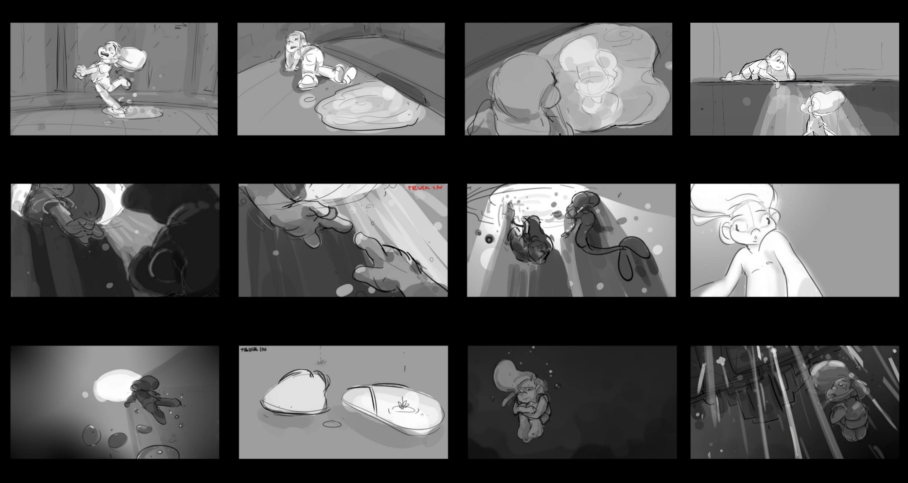
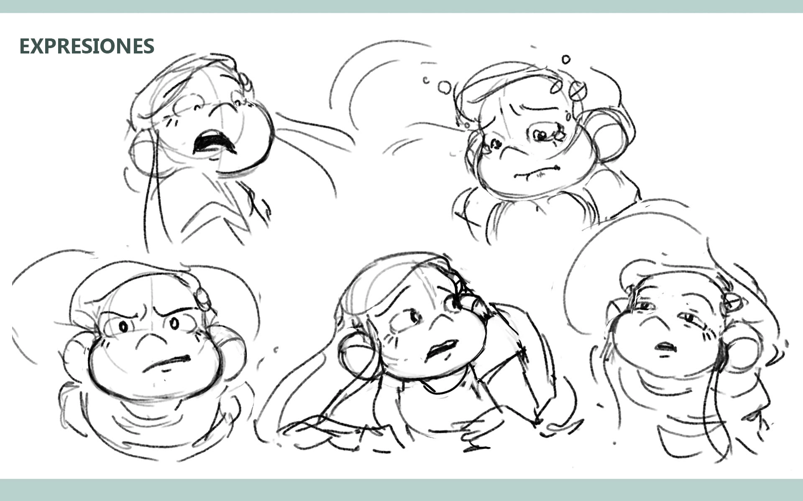
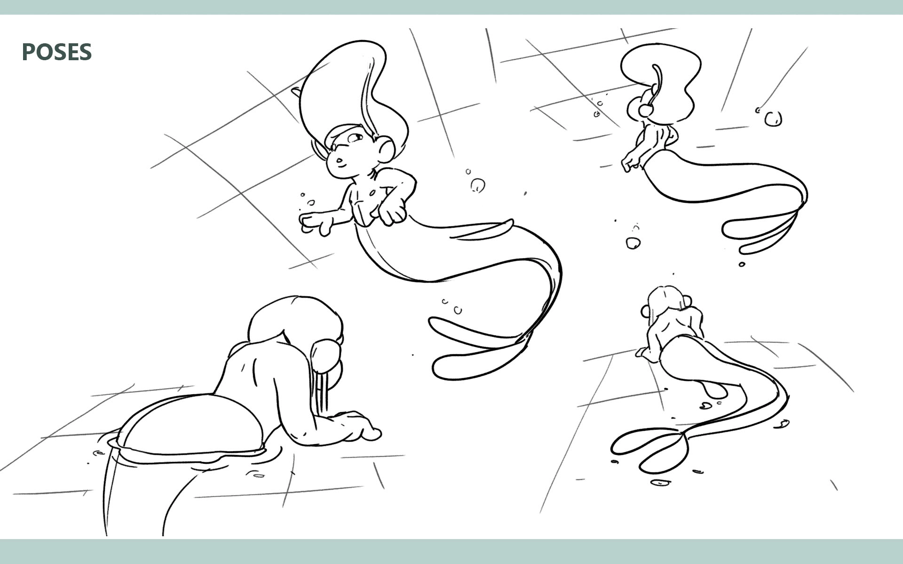
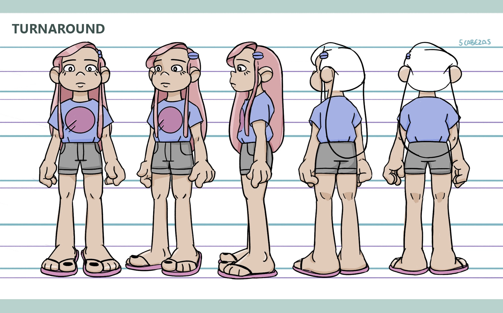
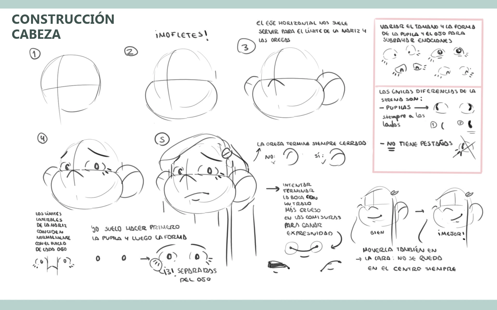
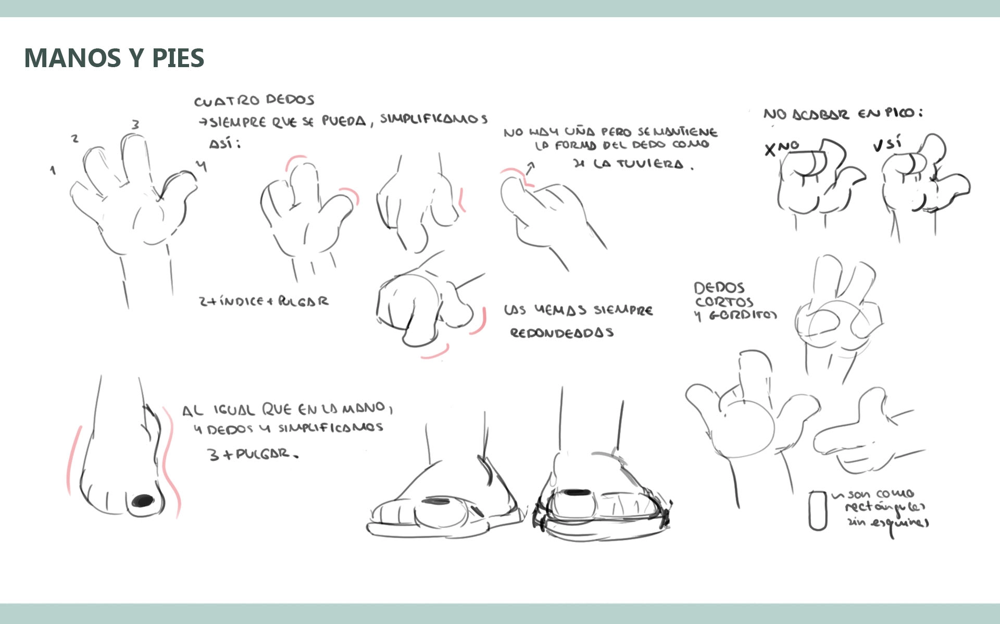

I was involved in every step and I ended up animating and compositing almost all of it. Here are some progress shots:
I was also in charge of storyboarding the whole short and doing the character design. Here are some of the boards I did and the character syle sheets I prepared for the team, with color design by Évany Pérez:






That's it! Not much left to see here... maybe want to try browsing to another project?
Nice to meet you! My name is Alberto.
These are some of the projects I have worked on for the last 5 years. Some are work for clients and some are collaborative with friends. Every one of them has lead me to develop new skills and to get to know new sides of myself, which is scary and exciting at the same time… and also kind of addictive. Oh well! I guess I am in this stuff for life now… I hope I can continue learning and creating the best way I know: surrounded by people. If you want to see more of my work, check rest of this portfolio.
I hope we get to work together sometime!